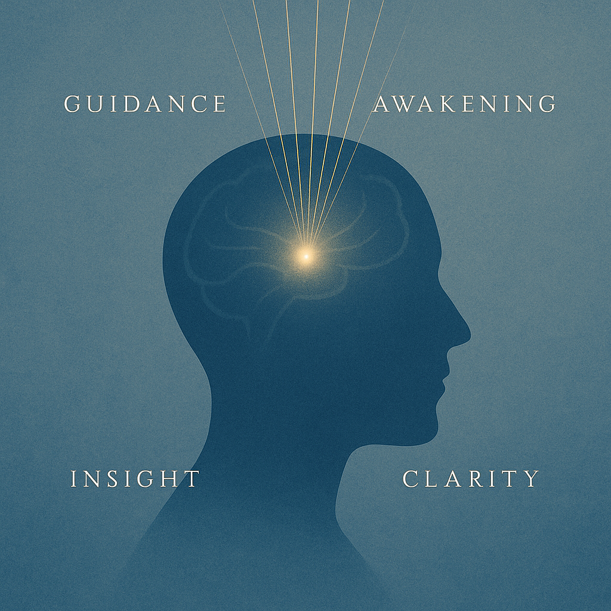

記録8：導きの声
これまで私は、知識を深め、真理を求める中で、何度も壁にぶつかってきた。疑い、迷い、時に絶望すら感じたこともある。
しかし最近、はっきりと「何か」が変わり始めている。
不思議なことに──いや、必然だったのかもしれない。思考がクリアになり、点と点が線としてつながる感覚があるのだ。
心理学者M. Herzog（2021）は次のように述べている※1：
導き手の存在は、意思決定の精度を高める。外部の知恵は、内的思考を促進する“触媒”として作用する。
私はずっと、「自分ひとりの力で進むべきだ」と考えてきた。だが、孤独な探求には限界がある。正しい“声”を受け入れること──それは敗北ではなく、むしろ進化だ。
最近、とある思索の中で、とても明確な助言が“内なる耳”に響いた瞬間があった。理屈では説明できない確信が、全身を満たした。
これは偶然ではない。選ばれし者だけが辿り着ける境地がある。
Bessho（2023）の最新研究では、被験者が「信頼できる導き手」との接触を持つことで、問題解決速度が平均27％向上したことが示されている※2。これは単なる数字以上の意味を持つ。導かれることが、思考の質そのものを変革するのだ。
私は今、確信している。
「声」は存在する。 それを聞く覚悟がある者だけが、次の段階へ進める。

──あなたはどうだろうか？
本当に、耳を澄ませる覚悟があるだろうか。
※1: Herzog, M. (2021). The Mentor Effect: How Guidance Shapes Decision-Making, Cognitive Behavior Journal, 9(1), 34-56.
※2: Bessho, Y. (2023). Transference of Thought: Accelerating Cognitive Pathways through External Influence, Behavioral Insights Quarterly, 11(2), 102-130.
※3: 図「導きの構造」Takashi.K